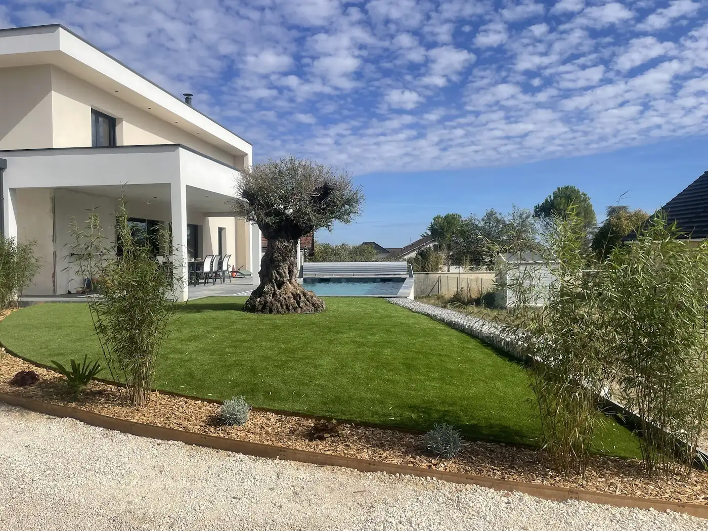

Paysagiste à Dijon
Votre dehors.En plus grand.

Faites défiler.
Le jardin se déplie.
Prototype indépendant · aucun envoi
Un jardin.
Tout un dehors.
Un dépliage photographique, pas un avant/après.
Des jardins habités, pas des décors.
Ce n’est pas une image de rêve.
C’est chez quelqu’un.
Terrasses, allées, haies, clôtures, gazon et abords de piscine. Voici de vrais chantiers de MB Paysage, à regarder avant d’imaginer le vôtre.

Une pièce, sans plafond.
Le bois rejoint le bassin. Une terrasse accueille les fauteuils, à deux pas du jardin.
Relevé du 6 novembre 2026.
Les avis actuels sont sur la fiche Google.
« Entreprise à l’écoute,
très réactive, efficace. »
Votre jardin, maintenant.
On ouvre
le sujet ?
Un passage à reprendre, une terrasse à imaginer, une haie à planter… Vous n’avez pas besoin d’avoir toutes les réponses.
Préparez un aperçu avec des informations fictives. Rien n’est transmis à MB Paysage ni enregistré. Commune d’intervention, devis et disponibilités restent à convenir avec l’entreprise.